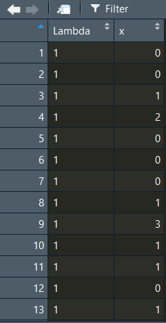

Chapter 4 Probability into R
확률 관련 포스팅에서는 몇 가지 간단한 확률을 R을 통해서 증명하고(Some simple probability demonstrations), 정규분포(normal distributions)와 이항분포(binomial distributions)로부터 분위(quantiles)를 얻어내는 방법을 살펴보고자 합니다.
여기서는 일단 간단하게 정규분포랑 이항분포, 그리고 독립사건과 종속사건만 간단하게 살펴보겠습니다.
- 분위(Quantiles)에 대해 어떻게 설명할까 고민을 좀 했는데 좋은 블로그 포스팅을 찾아서 참조용으로 링크하겠습니다.
- 링크는 여기를 보시면 됩니다. Q-Q Plot 설명하면서 Quantile의 정의도 잘 정리해놓으셨습니다.
그럼 본격적으로 포스팅을 시작하기에 앞서서 항상 그렇듯이 작업 디렉토리를 설정해보겠습니다.
library(here)
library(knitr)
library(dplyr)
library(tidyverse)
library(kableExtra)
here::here() %>% setwd()4.1 주사위굴리기 게임!
확률을 공부할 때, 지겹도록 등장하는 놈들이 총 셋이 있습니다. 동전, 카드, 그리고 주사위입니다. 인류는 아마도 이 셋을 만듦으로써 스스로를 괴롭히는 통계학을 발전시켰는지도 모르겠습니다… 일단 주사위 굴리기는 직관적으로 확률과 통계를 이해하기 좋은 방식입니다. 먼저 주사위 하나를 한 번 굴리는 것을 시뮬레이팅하는 함수를 코딩해보겠습니다.
## [1] 6die는 ?runif 라고 입력하여 살펴보면 generates random deviates.라고 기술되어 있는 것을 확인할 수 있습니다. 이어지는 함수를 풀어서 설명하면 다음과 같습니다.: 다음의 결과를 정수의 형태로 저장하라(as.integer) \(\rightarrow\) 무작위로 다음의 범주 내에서 다른 값을 1번 추출하라 \(\rightarrow\) 최소값은 1, 최대값은 6 (1 이상 7미만)을 갖게하라.
그러면 이번에는 두 개의 주사위를 굴려보도록 하겠습니다. 굴리는 횟수는 한 번입니다.
## [1] 8여기서 + 연산자는 부울리안 논리에 따르면 OR를 의미합니다. 즉 각 주사위를 한 번씩 랜덤으로 굴려 얻는 값을 더한 결과를 dice에 저장하라는 명령입니다. 그럼 이번에는 100번, 1000번, 그리고 100만번을 돌려겠습니다.
# 주사위 두 개를 100번 던져보기
dice100 <- (as.integer(runif(100, min=1, max=7))) +
(as.integer(runif(100, min=1, max=7)))
# 주사위 두 개를 1,000번 던져보기
dice1000 <- (as.integer(runif(1000, min=1, max=7))) +
(as.integer(runif(1000, min=1, max=7)))
# 주사위 두 개를 100만 번 던져보기
dice1M <- (as.integer(runif(1000000, min=1, max=7))) +
(as.integer(runif(1000000, min=1, max=7)))이렇게 시뮬레이팅한 세 결과를 히스토그램으로 살펴보겠습니다.
일단 가시적으로 살펴볼 수 있게 각 코드 이후에 그 결과값의 빈도를 표로 나타내보았습니다. 그리고 그 표를 히스토그램으로 재구성해보았습니다. 역시 N이 늘어날 수록 우리(?)가 사랑하는 그 녀석의 모습이 드러나기 시작합니다.
주사위는 1에서 6까지의 한정된 값을 가지고, 두 개를 합쳐서 굴려봐야 2부터 12까지의 한정된(bounded) 값이긴 하지만 이 주사위 굴리기를 통해서 우리는 지난 번 포스팅에서 살펴보았던 것처럼 정규분포(normal distribution)와 표본 크기(n), 혹은 표집(sampling)의 관계를 간접적으로 다시 한 번 살펴볼 수 있습니다.
4.2 동전 던지기
그럼 이번에는 동전을 한 번 던져보겠습니다. 저는 아직까지 앞면 뒷면 이외에 옆면에도 표기를 지닌 동전을 본 적이 없으니, 여기서의 동전도 앞면과 뒷면이라는 두 개의 값만을 가진다고 가정하겠습니다. 삼면이나 사면을 가진 동전을 보신 분들은 부디 댓글로 알려주시길… 나와라 검은 백조야(김웅진 · 김지희 2012, p.53).
아무튼 앞면과 뒷면이 있는 경우에 그 각각이 나올 확률은 0.5, 0.5라고 할 수 있습니다. rbinom()은, randomly [drawn] binomial, 무작위로 이항변수를 추출하라는 함수라고 할 수 있습니다. 백문이 불여일코드.
## [1] 0이어지는 함수를 풀어서 설명하면 다음과 같습니다.: 이항변수로 무작위로 추출하라(rbinom()) \(\rightarrow\) 1번 추출하라 \(\rightarrow\) 최대값은 1 (=최소값은 0) \(\rightarrow\) 추출확률은 0.5. 즉, 1이 나올 확률을 50%로 설정하여 무작위로 추출하라는 것입니다. 그럼 이번에는 100개의 동전을 던져보겠습니다.
| . | Freq |
|---|---|
| 0 | 49 |
| 1 | 51 |
| . | Freq |
|---|---|
| 0 | 493 |
| 1 | 507 |
이와 같이 이항변수는 나뉘어진(discrete) 값을 가집니다. 히스토그램으로 그리면 0이 나오는 빈도랑 1이 나오는 빈도만 보여주는 것이지요. 이번에는 100개의 동전을 1000번 던지는 경우를 시뮬레이팅해보겠습니다.
coin1Mx <- rep(NA, 1000000)
for(i in 1:1000000){
coin1Mx[i] <- sum(rbinom(100, 1, .5))
}
hist(coin1Mx,
freq = FALSE,
main = "Distribution of heads\n in 100 coin tosses",
xlab = "Number of heads")100만 개의 셀을 결측치(NA)로 갖는 텅빈 coinMx라는 벡터를 만들어보겠습니다. 그리고 i가 1에서 100만까지 반복되는 loop를 구성합니다. coin1Mx_1부터 coin1Mx_1000000까지 총 100만개의 coin1Mx_n들은 모두 100개의 동전을 던져서 앞면(1)이 나오는 경우의 수를 더한 각각의 값을 가질 것입니다. 따라서 coin1Mx는 100만개의 요소를 지닌 벡터입니다.
이 자료를 활용해서 만약 100개를 던졌을 때, 앞면이 60번 나오는 것이 과연 극단적인 확률일지 아니면 무던한 것일지 확인해보겠습니다자. 60번 이상 앞면이 나온 경우를 세는 함수를 짜보겠습니다.
##
## 61 62 63 64 65 66 67 68 69 70 71 72 73
## 7037 4474 2648 1589 854 476 229 110 63 20 15 4 3| 61 | 62 | 63 | 64 | 65 | 66 | 67 | 68 | 69 | 70 | 71 | 72 | 73 |
|---|---|---|---|---|---|---|---|---|---|---|---|---|
| 7037 | 4474 | 2648 | 1589 | 854 | 476 | 229 | 110 | 63 | 20 | 15 | 4 | 3 |
앞면이 나오는 빈도가 61번 이상부터는 점차 감소하는 것을 확인할 수 있습니다. 그렇다면 이번에는 앞면이 60번 넘게 나올 확률을 구해보겠습니다.
## [1] 0.017522## [1] 0.017522length()는 count()랑 같은 개념이라고 할 수 있습니다. 전체 coin1Mx의 수, 즉 100만 건 중에서 앞면이 60번보다 많이 나온 경우의 수가 어느 정도인지를 계산한 것입니다. 즉, 앞면이 60번보다 더 많이 나올 확률은 매우 작다고 할 수 있습니다다. 앞면이 60번 초과하여 나올 확률은 “평균적” or “일반적”인 것은 아니라는 뜻입니다.
4.3 독립사건 시뮬레이션
두 개의 독립적인 사건을 시뮬레이션해보겠습니다. 첫 번째 함수는 rand1이라는 자료에 최소값 0, 최대값 10 미만의 값을 가지는 100개의 수를 무작위로 담으라는 명령입니다. 두 번째 함수는 정규분포를 따라 평균이 0이고 표준편차가 2의 값을 갖는 분포에서 100개의 값을 무작위로 추출해 rand2라는 자료에 담으라는 명령입니다.
- 일단 보면
rand2의 경우, 비록 명령으로 평균을 0으로 하라고 설정했지만 무작위 추출 결과 100개의 값의 평균은 0보다 약간 큰 것을 확인할 수 있습니다.- 이제 두 값을 각각
x축,y축으로 설정하여 100개의 값을 좌표에 매칭시킨 그래프로 나타내보겠습니다.
- 이제 두 값을 각각
## Min. 1st Qu. Median Mean 3rd Qu. Max.
## 0.03412 3.09706 5.40381 5.14779 7.22230 9.82459## Min. 1st Qu. Median Mean 3rd Qu. Max.
## -5.24249 -1.30019 0.16829 0.09442 1.37764 5.01674결과적으로 이 그래프에서 우리는 rand1과 rand2 간에는 어떠한 경향성을 발견하기 힘듭니다. 즉, 독립적이라는 것은 두 변수 간에 어떠한 관계를 상정할 수 없다는 것으로 이해할 수 있습니다.
4.4 종속사건 시뮬레이션
이번에는 두 사건이 종속적 관계에 있는, 즉 한 사건에서의 변화가 다른 사건에 영향을 미치는 경우를 시뮬레이션해 보겠습니다.
rand3는 아까 만들어놓은 rand1에다가 0.75를 곱해서 4를 더한 100개의 값에다가 사실 상 rand2와 같은 방식으로 구한 값을 더하여 구한 자료입니다. 즉, 이 값은 rand1의 값에 어떠한 조치를 취하여 얻은 값이므로 rand1에 영향을 받은 결과물이라고 할 수 있습니다. 이렇게 구한 rand3와 rand1 간의 관계를 그래프로 나타내봅시다.
이 그래프의 해석은 나중에 산포도(scatter plot) 및 단순회귀분석(simple regression)을 살펴볼 때 다시 한 번 다룰 것입니다. 일단 여기서는 rand1이 증가할 때, rand3도 증가세를 보이는—둘의 인과적 관계는 확인할 수 없지만 아무튼—양(positive)의 관계를 보이고 있다는 것을 알 수 있습니다.
cor(rand1, rand3)로 두 변수 간의 상관계수를 구해보면10, 양수의 기울기를 얻게 됩니다.
이번에는 보다 더 불확실성을 가지는 종속사건의 관계를 시뮬레이션해보겠습니다. 여기서 말하는 불확실성은 더 큰 표준편차를 의미합니다.
- 표준편차가 평균에서 각 관측치가 떨어져 있는 거리의 평균이라고 할 때,
- 표준편차 값이 크다는 것은 개별 값들이 평균에서 더 넓게 분포해 있다는 것을 의미합니다.

## [1] 0.4538117rand1과 rand4의 산포도는 좀 더 넓게 퍼진 모양새를 보이고 둘의 상관관계는 식에서 상정한 0.75라는 기울기에서 0.456으로 더 낮아지는 것을 확인할 수 있습니다.
4.5 분포(Distribution)
통계분석에 앞서서 일반적으로 알아두어야 할분포 함수(distribution functions)를 살펴보겠습니다. 먼저, 정규분포(normal distributions)와 이항분포(binomial distributions)로부터 분위(quantiles)를 얻어내는 방법을 살펴보겠습니다.
4.5.1 정규분포 (The normal distribution)
## [1] 0.9772499## [1] 0.02275013## [1] 0.02275013첫번째 코드는 50을 평균으로 하고 10을 표준편차로 하는 정규분포가 있을 때, 그 분포에서 70이라는 숫자는 어디에 위치하는지를 묻는 것입니다.
두 번째도 동일한 의미인데, 두 식의 차이는 lower.tail 옵션을 어떻게 설정하느냐에 달려있습니다.
- 각 식이 도출한 결과를 보면 이해하시겠지만 근본적으로 두 식은 동일하며, 좌측에서 누적확률을 계산할 것인지 우측으로부터 계산할 것인지의 차이일 뿐입니다.
- 간단하게 말하면 첫 번째 식은 70이라는 숫자는 이 분포에서 하위 97.7%에 위치한 값이다라고 말하는 것이고 두 번째 식은 상위 2.2%라고 말하는 것입니다.
- 따라서 두 번째 식은 전체 확률에서 첫 번째 식으로 계산한 확률을 제한 값과 같으므로 세 번째의 형태로 계산할 수도 있습니다.
그렇다면 만약에 양측꼬리 확률(two-tailed probability)에서 최소한 70만큼 ‘극단적인’(extreme) 확률을 얻고 싶을 때는 어떻게 해야할까요? 이 경우는 생각을 좀 달리 해보면 됩니다. 평균을 기점으로 70은 오른쪽 끝쪽에 위치하는 셈입니다. 그만큼 왼쪽 끝에 위치한 값을 상정하고 그 값이 나올 확률을 함께 계산해주어야 합니다.
이 경우 평균 50에서 70은 20만큼 떨어져 있습니다(우측으로, + 방향). 따라서 우리는 좌측으로 20만큼 떨어진 30이 나올 확률을 함께 고려해주어야 하는 것입니다. 이러한 결과를 얻는 데는두 가지 방법이 존재합니다.
## 첫 번째 방법
pnorm(70, mean = 50, sd = 10, lower.tail = FALSE) +
pnorm(30, mean = 50, sd = 10, lower.tail = TRUE)## [1] 0.04550026## [1] 0.04550026그렇다면 이렇게 구한 분포에서의 누적확률 값을 가지고 분위를 구하여 보겠습니다. 마찬가지로 평균 50에 표준편차가 10인 분포를 상정합니다. 이때 사용할 함수는 qnorm()입니다.
## [1] 70.00001역으로 계산한 것인데, 평균 50에 표준편차 10인 분포에서 좌측부터 앞서 구한 누적확률에 해당하는 값을 구하라는 명령입니다. 앞에서 우리가 입력한 70과 근사한 값을 얻을 수 있습니다. 근소한 차이는 소수점에 의해 발생하는 것으로 이해하시면 됩니다.
다음으로는 주어진 평균 50, 표준편차 10의 분포에서 70이라는 값이 분포에서 차지하는 밀도를 확인해보겠습니다 밀도(density)를 알아보기 위한 함수는 다음과 같습니다.
## [1] 0.005399097그렇다면 이번에는 정규분포에서 관측치를 무작위로 추출(draws)을 해보겠습니다. 이번에도 함수에는 70이라는 값이 사용될 것인데, 여기서 사용되는 70은 특정한 값이 아니라 추출 횟수를 의미합니다.
## [1] 46.50611 44.46011 59.85180 56.92038 45.28452 49.17147 39.05260 56.88268
## [9] 62.86121 45.12872 45.20455 39.95431 54.01066 37.02523 54.12853 47.57958
## [17] 42.86466 30.18120 53.70887 41.92637 36.82987 56.26902 52.30013 40.97493
## [25] 53.09003 67.75457 38.71713 39.08685 39.70970 47.70983 48.91331 38.67013
## [33] 37.66809 40.28761 65.26439 30.72966 39.45501 49.60163 58.10184 54.23234
## [41] 45.48162 51.33822 27.18815 47.93246 44.07059 38.89544 51.20265 44.47311
## [49] 54.69822 63.85507 49.71985 33.29094 51.64303 47.85751 53.53842 50.65780
## [57] 52.42276 39.65340 64.79593 59.58894 43.14126 57.72921 54.33396 62.13203
## [65] 48.01102 36.79469 60.32323 57.82806 41.62079 56.50440총 70개의 값이 무작위로 추출되어 x라는 벡터에 담겨 있는 것을 확인할 수 있습니다.
이번에는 좀 더 구체적으로 정규분포 사례들을 살펴보겠습니다. 서로 다른 평균(mean)과 표준편차(standard deviation)를 가지는 세 개의 정규분포를 그려보겠습니다.
normal5 <- rnorm(n = 10000, mean = 5, sd = 3)
normal50 <- rnorm(n = 10000, mean = 50, sd = 10)
normal20 <- rnorm(n = 10000, mean = 20, sd = 1)세 함수 모두 표본의 크기는 1만 개이며, 각자 다른 평균과 표준편차를 따르는 정규분포를 가정하여 무작위로 추출된 값을 담는 벡터로 출력됩니다. 이렇게 값을 갖는 세 개의 벡터를 하나의 데이터로 합쳐보겠습니다. 간단하게 말하면 하나의 표로 합친다는 것과 같습니다.
norm <- bind_rows(tibble(x = normal5, Mean = 5, SD = 3),
tibble(x = normal50, Mean = 50, SD = 10),
tibble(x = normal20, Mean = 20, SD = 1))
norm$Mean <- as.factor(norm$Mean)그리고 이렇게 만들어진 데이터프레임의 평균 값을 Factor 자료 유형으로 변환해줍니다. 이것이 의미하는 게 뭘까요? 평균5, 평균50, 평균20을 문자열로 인식하게 하여 일종의 “이름”으로 인식하게 만드는 것입니다. 그러면 이제 이렇게 만들어진 데이터로 그래프를 그려보겠습니다.
ggplot(norm, aes(x = x)) +
geom_density(aes(fill = as.factor(Mean)), adjust = 4, alpha = 1/2) +
guides(color=guide_legend(title = "Mean, SD")) +
guides(fill=guide_legend(title = "Mean, SD")) +
scale_color_discrete(labels = c("5, 3", "20, 1", "50, 10")) +
scale_fill_discrete(labels = c("5, 3", "20, 1", "50, 10")) +
ggtitle("Probability Density Function\nNormal Distribution")ggplot2 패키지는 R에서 그래프를 그리는 데 있어서 유용하게 사용됩니다. 먼저 ggplot2 패키지를 불러오고 나서, ggplot(데이터프레임 이름, aes(x = x축으로 삼을 변수이름))을 설정하면 일단 수학적으로 지정한 데이터의 변수에 대한 기본적인 작업은 진행이 됩니다.
그러나 이 단계에서는 아직 가시화(visualization)라고 할 수는 없는데, 주어진 데이터를 컴퓨팅했을 뿐이지 어떻게 가시적인 형태로 보여주라는 명령을 부여하지 않았기 때문입니다. 컴퓨터로 그림을 그려본 사람들은 이해가 쉬운데, ggplot()은 레이어 시스템을 이용해서, 우리가 뭔가 그려진 걸 얻고 싶을 때마다 레이어를 하나씩 추가해서 보여달라고 R에게 요구해야만 합니다.
그리고 이때, 레이어를 추가하는 것은 +로 가능합니다. 하나씩 뜯어서 보면,
ggplot(norm, aes(x = x)) +:ggplot2패키지를 이용하여norm이라는 데이터 프레임에서x축에는x라는 변수를 기준으로 늘어놓아라. 그리고 뒤에 더해지는 레이어 명령을 덮어 씌워라 라는 의미의 코드입니다.geom_density(aes(fill = as.factor(Mean)), adjust = 4, alpha = 1/2) +: 밀도함수의 형태로 그래프를 그리되,Mean이라는Factor변수가 같은 것들 끼리 같은 색으로 칠해서 보여주어라 라는 코드입니다.- 뒤의 옵션은 세세한 조정이니 굳이 언급하지는 겠습니다.
- 뒤에 더해지는 옵션들은 레이어를 추가하여 기존의 코드에 덮어 씌워, 그래프를 덧칠하는 역할을 합니다.
guides(color=guide_legend(title = "Mean, SD")) + guides(fill=guide_legend(title = "Mean, SD")) +: 우측에 더해지는 레전드의 이름을 어떻게 지으라는 명령입니다.- 이 경우에는 색도 있고 그래프를 선명하게 보여주는 선도 있기 때문에 그 각각이 레이어를 이루고 있어 둘 모두에게 이러한 명령어를 적용해야 합니다.
scale_color_discrete(labels = c("5, 3", "20, 1", "50, 10")) + scale_fill_discrete(labels = c("5, 3", "20, 1", "50, 10")) +:color와fill을 뒤에 이어지를 라벨로 구분해주라는 코드입니다.- ggtitle(
Probability Density Function\nNormal Distribution) : 표 전체의 이름을 지정하는 명령어이고,\n은 R에서는 강제 개행(enter)하는 명령어입니다.
4.5.2 이항분포 (Binomial distribution)
이항분포는 우리에게 n번의 시행에서 k번 성공할 확률을 보여주는 분포입니다. 단순하게 말하자면 0과 1의 값만 갖는다고 가정된 벡터가 있다고 하겠습니다. 이때 벡터의 요소의 총 개수는 100개이고 랜덤으로 0과 1 중 하나가 벡터에 들어간다고 할 수 있습니다. 이때 전체 요소의 수 100개 중 1이 뽑혔을 경우를 계산하면 결국 1을 뽑을 성공 사례의 총합을 100으로 나눔으로써, 전체 대비 성공의 확률을 구하는 것이라 할 수 있습니다. 즉, 정규분포에서와는 다르게 이항분포에서는 평균(mean)이 아니라 비율(proportion)에 초점을 맞추게 됩니다.
## [1] 0.7223805시도가 성공할 확률을 0.25라고 놓고 시행 횟수를 100번으로 가정한 경우입니다. 즉, 100번 시도했을 때 성공할 확률이 25%인 이항분포를 가지는 데, 실제로는 27번 성공했다고 한다면 누적확률에서 어느 위치에 해당하는지를 묻는 함수입니다. lower.tail()이 TRUE로 설정되어 있으므로 좌측에서부터 계산한 것입니다. 즉, 27번 성공한 것은 하위 72.2%, 상위 27.8%에 해당한다는 것을 알 수 있습니다.
## [1] 27이렇게 구한 누적확률로 다시금 성공 횟수를 추정해보겠습니다. 정규분포때와 거의 유사합니다. size = 100은 서로 독립적인 사건의 시행, 즉 베르누이 시행(Bernoulli trials)의 횟수를 의미합니다. 그렇다면 100번 시도했을 때 27번 성공할 정확한 확률을 구해보겠습니다.
## [1] 0.08064075## [1] 0.08064075두 가지 방법으로 구할 수 있는데, 첫 번째는 R에 내장된 기본 함수인 dbinom()으로 구하는 것입니다. 두 번째는 choose() 함수를 이용해서 구하는 것입니다. 개인적으로는 dbinom() 함수가 있는데 굳이 choose() 함수 사용법까지 알아야 하나 싶기는 합니다. 그러나 choose() 함수로 보여지는 식이 좀 더 직관적으로 이해하기에는 도움이 됩니다.
## [1] 25 27 27 28 26 24 26 30 32 22 24 22 25 37 28 25 24 25 23 34 23 26 26 23 32
## [26] 22 22## [1] 4.597782마지막으로는 0.25의 확률을 가진 100번의 베르누이 시행을 27번을 반복하는 결과를 보여줍니다. 즉, 평균적으로는 100번 시행 중 25번의 성공을 할 것으로 기대되지만, 실제 시행을 27번 해보면 무작위 추출이기 때문에 25를 중심으로 표준편차 4.21의 범위 내에서 여러 값들이 추출되는 것을 확인할 수 있습니다. 무작위로 추출하기 때문에 돌릴 때마다 값은 다르게 나올 것입니다.
다시 한 번, n번의 독립적인 베르누이 사건을 시행할 때, k번 성공할 확률을 구하는 이항분포로 실습해보겠습니다. 구체적으로 모집단의 성공 확률을 p, 모집단의 크기를 n으로 특정하겠습니다.
binom10 <- rbinom(n = 10000, p = .5, size = 10)
binom50 <- rbinom(n = 10000, p = .5, size = 50)
binom100 <- rbinom(n = 10000, p = .5, size = 100)정규분포와 다르지는 않습니다. 다만 여기서의 size는 전체 동전을 던지는 횟수로 이해하면 되고 10,000은 그렇게 동전을 10번, 50번, 100번 던지는 걸 10,000번 반복한다는 의미라고 할 수 있습니다. 그럼 이제 마찬가지로 하나의 데이터프레임으로 세 번의 시도(binom10, binom50, binom100)의 결과를 합쳐주고 그래프를 그려보겠습니다.
binom <- bind_rows(tibble(k = binom10, Size = 10),
tibble(k = binom50, Size = 50),
tibble(k = binom100, Size = 100))
binom$Size <- as.factor(binom$Size)
ggplot(binom, aes(x = k)) +
geom_density(aes(group = Size, color = Size, fill = Size),
adjust = 4, alpha = 1/2) +
ggtitle("Probability Mass Function\nBinomial Distribution")4.5.3 포와송 분포 (Poison distribution)
이 포스팅은 주로 R 코드에 관한 것이기 때문에 분포에 대한 수리통계적인 설명은 가급적 피하도록 하겠습니다. 포와송 분포는 고정된 대규모 모집단(fixed large population)에서 짧은 시간에 걸쳐서 희소한 사건(rare events)의 발생 횟수를 추정하는 데 용이한 분포입니다.
포와송 분포에서 그 희소한 사건의 발생 확률은 시간 단위 별 발생의 평균 횟수로 나타나며 그리스어 람다(Lambda, \(\lambda\))로 표기됩니다. 람다는 평균과 분산을 결정합니다.
포와송 분포의 확률을 이용해서 우리는 단일 시간 단위에서 k라는 희소한 사건을 정확하게 관측할 확률을 기술할 수 있습니다. 나머지는 앞의 정규분포랑 이항분포에서 했던 코드를 기계적으로 반복해서 살펴보는 것과 같습니자. 단, 포와송 분포에서 코드 중에는 이전과 다른 부분이 있으니 그 점만 유의하면 될 것 같습니다.
pois1 <- rpois(n = 10000, lambda = 1)
pois2 <- rpois(n = 10000, lambda = 2)
pois5 <- rpois(n = 10000, lambda = 5)
pois20 <- rpois(n = 10000, lambda = 20)
pois <- tibble(Lambda.1 = pois1,
Lamnda.2 = pois2,
Lambda.5 = pois5,
Lambda.20 = pois20)이번에는 만들어진 pois라는 데이터를 melt() 함수를 이용해서 다른 변수로 재구성해줄 것입니다. melt() 함수는 reshape2 패키지에서 로드할 수 있고, str_extract() 함수는 stringr 패키지에서 로드할 수 있다.
library(reshape2)
library(stringr)
pois <- melt(data = pois,
variable.name = "Lambda",
value.name = "x")
pois$Lambda <-
as.factor(as.numeric(str_extract(string =
pois$Lambda,
pattern = "\\d+")))아래 그림에서 맨 왼쪽은 처음 만들어진 pois 데이터입니다. 두 번째는 melt() 함수를 이용해서 Lambda라는 변수 아래에 1, 2, 3, 4의 라벨을 길게(long-shape) 합친 것입니다. 그리고 마지막으로는 Lambda 변수의 문자열 Lambda.을 제외한 라벨 숫자만 남겨놓은 것입니다.
pois 데이터 |
long-shaped pois |
label only |
|---|---|---|
|  |
이렇게 만들어진 포와송 분포의 값들을 하나의 그래프로 만들어서 가시화해볼 수도 있습니다.
4.5.4 음이항 분포 (Negative Binomial Distribution)
음이항 분포는 n번째 시도에서 k번째에 성공할 확률을 보여줍니다. 음이항 분포는 다음과 같은 네 조건이 충족될 때 유용합니다.
- 모든 시도는 독립적이다.
- 각 시도의 결과는 성공 혹은 실패로 구분될 수 있다.
- 성공 확률 (
p)은 각 시도마다 동일하다. - 마지막 시도는 항상 성공이어야만 한다.
여기서 보면 알 수 있듯이, 처음 세 조건은 이항분포와 동일합니다. 세 개의 음이항 분포 결과를 계산하여 세 개의 벡터로 저장하겠습니다. 그리고 이걸 마찬가지로 하나의 데이터로 합칩니다.
nbinom1 <- rnbinom(n = 10000, p = .3, size = 1)
nbinom5 <- rnbinom(n = 10000, p = .3, size = 5)
nbinom10 <- rnbinom(n = 10000, p = .3, size = 10)
nbinom <- bind_rows(tibble(x = nbinom1, Size = 1),
tibble(x = nbinom5, Size = 5),
tibble(x = nbinom10, Size = 10))
nbinom$Size <- as.factor(nbinom$Size)포와송이랑 이항분포에서 사용했던 함수들과 거의 유사합니다. 이렇게 만들어진 그래프는 다음과 같습니다.
4.5.5 F 분포 (F Distribution)
rf()를 통해서 F 분포에서 무작위로 10,000개의 값을 서로 다른 자유도를 이용하여 추출하여 네 개의 벡터에 저장합니다. 이제는 아시겠지만 rf()의 r은 random을 의미합니다.
fa <- rf(n = 10000, df1 = 1, df2 = 50)
fb <- rf(n = 10000, df1 = 5, df2 = 100)
fc <- rf(n = 10000, df1 = 50, df2 = 50)
fd <- rf(n = 10000, df1 = 50, df2 = 500)
f <- bind_rows(tibble(x = fa, DF1 = 5, DF2 = 5),
tibble(x = fb, DF1 = 5, DF2 = 10),
tibble(x = fc, DF1 = 10, DF2 = 5),
tibble(x = fd, DF1 = 10, DF2 = 10))이렇게 만들어진 데이터의 결과는 그림과 같습니다. 그리고 이제 x 값이 6보다 작거나 같은 경우로 하위 데이터를 만듭니다. 왜냐하면 굉장히 극단적인 수치들이 희소한 확률로 있기 때문에 그냥 그래프를 그리면 집단 별 차이를 보기가 조금 힘들 수도 있기 때문입니다. 그리고 전체 자유도를 지정해줄 것입니다. 자세한 내용은 나중에 F-distribution을 언급할 때 설명하도록 하겠습니다.
f <- subset(f, x <= 6)
f$DF <- f$DF1 * 100 + f$DF2
f$DF <- as.factor(f$DF)
ggplot(f, aes(x = x)) +
geom_density(aes(color = DF, fill = DF), adjust = 4, alpha = 1/2) +
guides(color=guide_legend(title = "DF1, DF2")) +
guides(fill=guide_legend(title = "DF1, DF2")) +
scale_color_discrete(labels = c("1, 50", "5, 500", "50, 50", "50, 500")) +
scale_fill_discrete(labels = c("1, 50", "5, 500", "50, 50", "50, 500")) +
ggtitle("Probability Density Function\nF Distribution")DF1이랑 DF2를 합쳐준다는 것은 F-분포의 특징 때문인데, 간단하게 말하자면 t-분포와 다르게 F-분포는 분자, 분모에 자유도가 하나씩 즉 2개가 필요하기 때문입니다.
오늘 포스팅한 내용 중에서는 처음 두 분포, 정규분포와 이항분포에 대해서는 숙지할 필요가 있고 나머지 분포들은 추후에 다시 다룰 기회가 있을 것이라고 생각합니다. 사실 분포는 엄청 많습니다: 웨이블, 토빗… 뭐 여럿 있기 때문에 다 외우는 것은 어렵고 여기서는 단지 R-code로 구현하는 방법을 러프하게 살펴보았다고 할 수 있을 것입니다.
그리고 ggplot()은 손에 익도록 연습하는 것이 좋습니다. R의 장점 중 하나는 여타의 통계툴들에 비해 그래프 기능이 뛰어나다는 것입니다. ggplot()은 R이 그러한 명성을 얻게 해 준 공신 중 하나라고 할 수 있습니다.
뒤의
rnorm()을 이용하여 무작위로 생성한 100개의 값을 구했기 때문에, 이 결과는 구할 때마다 달라질 것입니다.↩︎